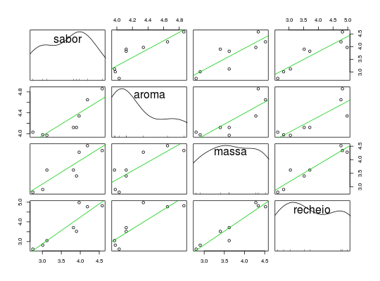

Dados de 8 marcas de coxinha de galinha, avaliados em 4 atributos (sabor, aroma, qualidade da massa e qualidade do recheio) avaliados por 5 julgadores numa escala de 1 a 5, quanto maior a nota melhor a classificação do atributo. Os dados de entrada da tabela referem-se à média das notas dos 5 julgadores, para cada marca e cada atributo.
Um data.frame com 8 observações e 5 variáveis, em que
marcasaboraromamassarecheioMINGOTI (2005), pág. 42.
data(MingotiTb3.5)#> Warning: data set ‘MingotiTb3.5’ not foundstr(MingotiTb3.5)#> 'data.frame': 8 obs. of 5 variables: #> $ marca : Factor w/ 8 levels "M1","M2","M3",..: 1 2 3 4 5 6 7 8 #> $ sabor : num 2.75 3.9 3.12 4.58 3.97 3.01 4.19 3.82 #> $ aroma : num 4.03 4.12 3.97 4.86 4.34 3.98 4.65 4.12 #> $ massa : num 2.8 3.4 3.62 4.34 4.28 2.9 4.52 3.62 #> $ recheio: num 2.62 3.52 3.05 4.82 4.98 2.82 4.77 3.71library(car) scatterplotMatrix(~sabor + aroma + massa + recheio, data = MingotiTb3.5, smooth = FALSE)